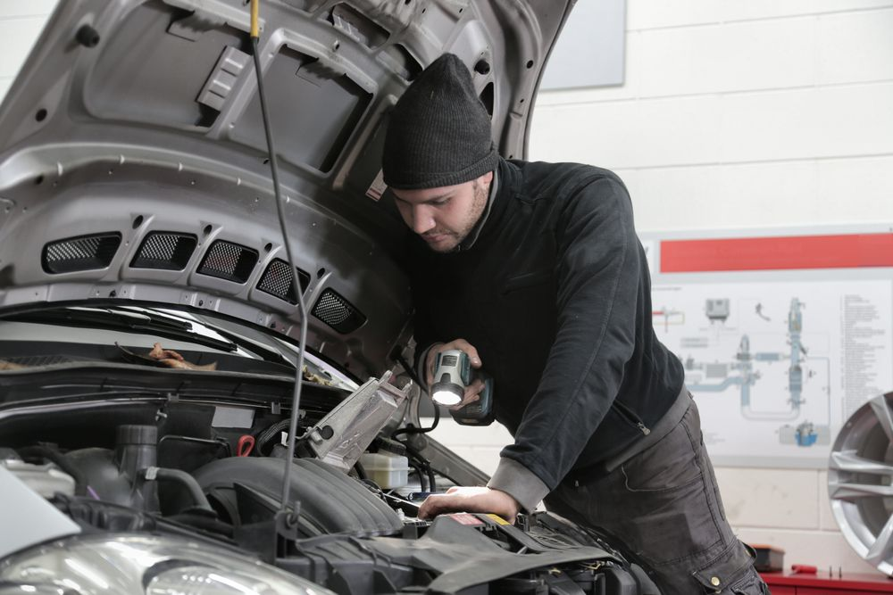
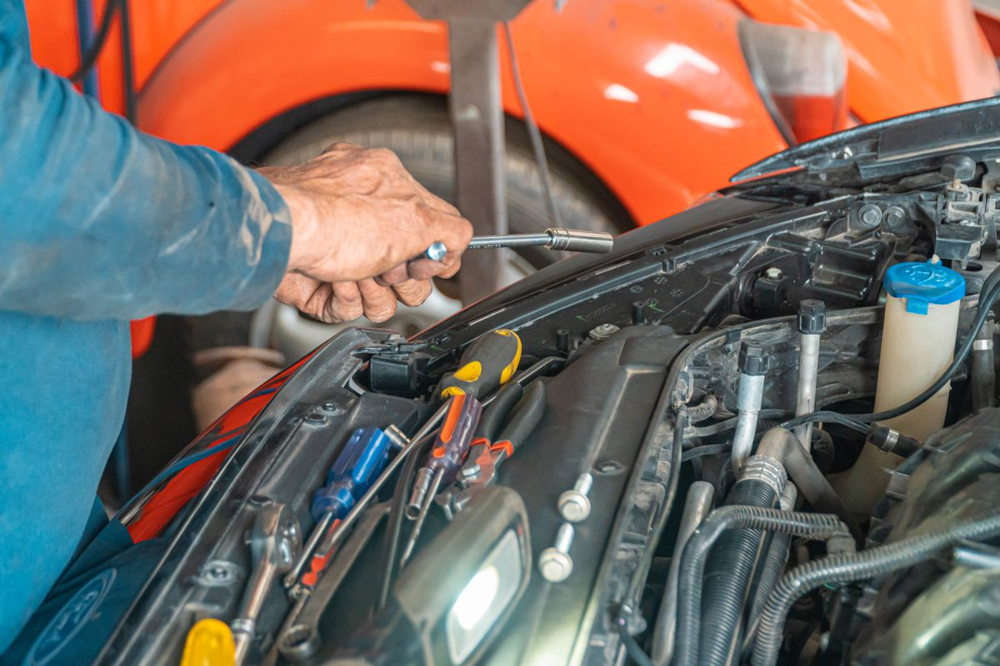
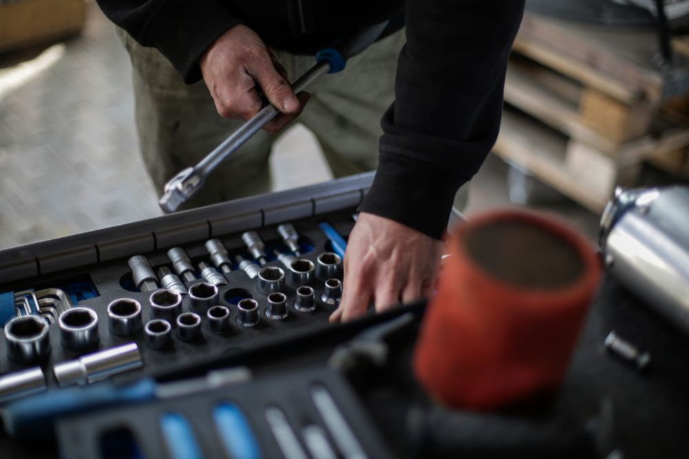

01
Diagnóstico eletrônico
Leitura de sistemas e análise de falhas para entender a origem do problema.
Solicitar orçamento ↗ENGENHARIA NO CUIDADO. EXCELÊNCIA NO CAMINHO.
Diagnóstico, manutenção e performance com a
atenção que cada detalhe exige.

01 / NOSSA ESSÊNCIA
Um carro é feito de milhares de detalhes. A sua confiança também.
A VÉRTICE AUTO nasce como um conceito de oficina que une conhecimento técnico, manutenção consciente e uma relação transparente com quem dirige.
Da prevenção ao reparo, nossa proposta é simples: entender antes de intervir, explicar antes de executar e cuidar de cada detalhe.
Conheça nosso jeito de trabalhar ↗02 / ESPECIALIDADES
Do cuidado preventivo aos desafios mais complexos.
Uma visão completa para o seu veículo.
Leitura de sistemas e análise de falhas para entender a origem do problema.
Solicitar orçamento ↗Cuidado planejado para antecipar desgastes e manter tudo em equilíbrio.
Solicitar orçamento ↗Inspeção dos componentes que fazem a diferença na estabilidade e na segurança.
Solicitar orçamento ↗Análise e reparação dos sistemas que transformam energia em movimento.
Solicitar orçamento ↗Lubrificação e filtragem com atenção às especificações de cada veículo.
Solicitar orçamento ↗Uma avaliação integrada para você seguir com mais tranquilidade.
Solicitar orçamento ↗03 / O PADRÃO VÉRTICE
Cuidar bem de um veículo começa com respeito por quem está ao volante.
Você entende o que precisa ser feito, por quê e quais são as possibilidades. Sem surpresas.
Investigar a causa para propor o cuidado certo. Cada sintoma merece atenção.
Respeito ao seu veículo em todas as etapas, do primeiro contato à entrega.
Informação clara, sem complicar. Você participa das decisões sobre o seu carro.
Prioridade para o que protege você, seus passageiros e cada próximo trajeto.
04 / DO PRIMEIRO CONTATO À PRÓXIMA VIAGEM
Comece uma conversa e conte como podemos ajudar.
Compartilhe os sintomas e as informações do seu veículo.
Entenda as possibilidades e os próximos passos da análise.
Combine o melhor momento para cuidar do seu carro.
05 / O CUIDADO EM FOCO
Um olhar sobre o universo automotivo.
Fotografias ilustrativas de banco de imagens.


06 / SEU PRÓXIMO PASSO
Conte o que seu veículo precisa.
O primeiro passo é uma boa conversa.
Uma experiência demonstrativa.Esta é uma marca fictícia. Nenhuma solicitação será enviada enquanto não houver um WhatsApp autorizado configurado.